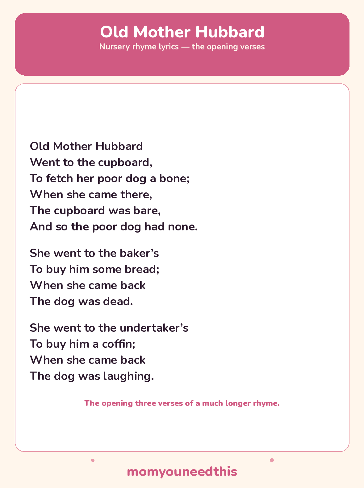

Old Mother Hubbard The Story Rhyme, With Lyrics and a Free Printable
This rhyme is really a chain of errands — every verse sends the old lady somewhere new on her dog's behalf. The opening three printed here are the ones toddlers follow best: an empty cupboard is a problem every child understands.
Last updated: October 25, 2026
Quick Answer
Old Mother Hubbard is a traditional nursery rhyme built from a chain of funny errands. This page prints the opening three verses — the empty cupboard, the baker’s, and the undertaker’s — and says so plainly, because the full rhyme is much longer. The same three verses are on the free printable lyrics sheet.
At a Glance
- Rhyme: Old Mother Hubbard
- Type: Story rhyme
- Verses on this page: 3 — the opening verses of a much longer rhyme
- Best for: Ages 3–6
- Printable: 1 lyrics sheet (the same 3 verses)
- First printed: 1805
- Cost: Free — print at home
🎵 Old Mother Hubbard Lyrics
These are the classic opening verses of Old Mother Hubbard — the first three errands. The traditional rhyme goes on for many more errands after these; this page and the printable sheet carry the opening three, word for word the same in both places.
Old Mother Hubbard
Went to the cupboard,
To fetch her poor dog a bone;
When she came there,
The cupboard was bare,
And so the poor dog had none.
She went to the baker’s
To buy him some bread;
When she came back
The dog was dead.
She went to the undertaker’s
To buy him a coffin;
When she came back
The dog was laughing.

✂️ Download Your Free Old Mother Hubbard Lyrics Sheet
All the lyrics from this page on one sheet, in big, well-spaced type for young readers.
⬇️ Download Free Lyrics Sheet 🖨️ Print🎁 Free printable for ages 3–6
🐶 About This Rhyme
Every errand ends with the dog surprising her. She goes for bread and comes back to a dog playing dead; she goes for a coffin for the “dead” dog and comes back to find him laughing. Children who spot the joke early love it — the dog is not sad or hurt, he is tricking her, verse after verse, and the last laugh of these opening verses is his.
The rhyme was first printed in 1805 as the comic adventures of Old Mother Hubbard and her dog, and the full traditional version runs through many more shops and surprises than the three verses printed here. Those opening verses are the part everyone knows — the empty cupboard is one of the most quoted moments in any nursery rhyme — and they are also the part young children can hold in memory and act out.
🖨️ How to Use This Rhyme
- Read the three errands. Pause before each “when she came back” line and let your child guess what the dog will be doing this time.
- Act the surprises. One of you is Mother Hubbard fetching and returning; the other is the dog — very still, then suddenly laughing.
- Print the lyrics sheet. It carries the same opening three verses as this page, in big, well-spaced type.
- Let your child “read” it back. Following the verses on the sheet while retelling the dog’s tricks is real story-sequencing practice.
🎵 More Rhymes & Fun
🎵 Sing More Rhymes
Every rhyme in this set lives on one hub page, with lyrics and a printable for each. Browse the collection.
🎵 Little Bo-Peep
The gentle lost-sheep rhyme, in its two standard verses. Read the lyrics.
🎵 Five Little Monkeys
The counting-down rhyme, sung on five wiggling fingers. Read the lyrics.
🎨 Free Coloring Pages
Hundreds of free coloring sheets to print for every age. See the coloring pages.
❓ Old Mother Hubbard FAQ
What are the lyrics to Old Mother Hubbard?
The opening verses are printed in full above — the cupboard, the baker’s, and the undertaker’s errands. The traditional rhyme continues for many more verses after these three; the free printable sheet carries the same opening three verses as this page.
What age is Old Mother Hubbard for?
It suits ages 3 to 6 best. The story chain, the guessing game before each return, and the dog’s jokes land well with preschoolers, and older children enjoy learning that the rhyme keeps going.
Can I print the lyrics sheet?
Yes — the lyrics sheet is free to print at home with no signup. It carries the same opening three verses as this page — not a shortened summary of them.
How long is the full Old Mother Hubbard rhyme?
Much longer than three verses — the traditional rhyme is a long chain of errands to different shops, with the dog doing something surprising after every one. This page prints the classic opening three verses and says so plainly, rather than pretending they are the whole rhyme.